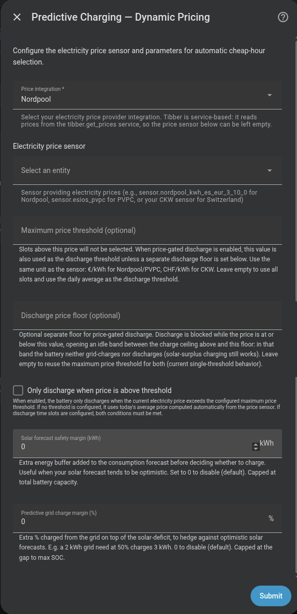

Carga predictiva — Modo Precio Dinámico¶
Selecciona automáticamente las horas más baratas del día para cubrir el déficit energético calculado.
Integraciones de precio compatibles¶
- Nord Pool — tanto la integración oficial de Home Assistant como la integración de HACS
- PVPC (ESIOS REE, España)
- CKW (Suiza)
- EPEX Spot (p. ej. aWATTar)
- ENTSO-e (Plataforma de Transparencia)
- Tibber — no necesita sensor de precio; el motor llama directamente al servicio
tibber.get_prices(ver abajo)
Tibber no necesita sensor
Al elegir Tibber como integración de precios, el campo Sensor de precio queda sin usar — el motor llama al servicio tibber.get_prices (precios de hoy y, tras las ~13:00, los de mañana), cachea los slots y refresca cada hora. La integración oficial de Tibber debe estar configurada en HA.
Nord Pool oficial y HACS se configuran igual
Selecciona Nordpool y elige una entidad de precios del proveedor. Los sensores de HACS se siguen leyendo desde sus atributos raw_today / raw_tomorrow. Si el sensor tiene price_in_cents: true, Omnibattery convierte automáticamente sus slots y el precio actual a moneda principal/kWh; por tanto, los umbrales se siguen introduciendo en €/kWh (o la moneda principal correspondiente), no en céntimos. Si la entidad pertenece a la integración oficial de Nord Pool de Home Assistant, Omnibattery resuelve automáticamente su área de mercado, llama a nordpool.get_prices_for_date para el día actual, convierte los valores de moneda/MWh a moneda/kWh y refresca la caché cada hora. No hace falta elegir otro proveedor ni crear un sensor de plantilla.
Configuración¶
| Campo | Descripción |
|---|---|
| Tipo de integración de precios | Nordpool / PVPC / CKW / EPEX Spot / ENTSO-e / Tibber |
| Sensor de precio | Entidad de precios de HA. Para Nord Pool, selecciona una entidad oficial o el sensor existente de HACS; Tibber no usa este campo |
| Umbral máximo de precio | (Opcional) Precio techo; no carga aunque la hora sea "barata" si supera este valor. También se usa como umbral de descarga cuando el control de descarga por precio está activado |
| Descargar solo cuando el precio supere el umbral | (Opcional) Descarga condicionada al precio actual — ver abajo |
| Suelo de precio de descarga (€) | (Opcional) Suelo separado para la descarga condicionada — abre una banda de reposo entre el techo de carga y este suelo. Vacío = reutiliza el umbral máximo para ambos. Ver Suelo de precio de descarga separado |
| Margen de seguridad de previsión solar (kWh) | (Opcional) Buffer de energía adicional añadido a la previsión de consumo antes de decidir si cargar (por defecto 0 kWh) |
| Margen de carga de red predictiva (%) | (Opcional) Aumenta la cantidad de carga de red para cubrir previsiones solares optimistas — p. ej. una necesidad de 2 kWh de red al 50 % carga 3 kWh. Limitado al hueco hasta el SOC máximo (por defecto 0 %) |
| Carga oportunista por precio negativo | (Opcional, desactivada por defecto) Carga en franjas de importación negativas válidas aunque la previsión normal no detecte déficit |

Evaluación diaria (00:05)¶
A las 00:05 el controlador:
- Calcula el déficit y proyecta consumo, solar y energía utilizable de batería en intervalos de 15 minutos hasta medianoche.
- Recupera los precios horarios del día de la integración configurada.
- Detecta cuándo la energía acumulada alcanzaría el SOC mínimo y reserva los slots elegibles más baratos capaces de entregar cada requisito antes de su plazo.
- Calcula y almacena el precio medio del día a partir del perfil horario de precios.
- Asigna una cuota energética a cada slot; solo la energía sin plazo temprano sigue compitiendo libremente por precio durante el día.
«Más barato» significa, por tanto, más barato entre los slots capaces de cumplir el requisito a tiempo. Una franja posterior nunca cuenta como cobertura de energía que ya se necesitaba antes. Un plan parcial sigue siendo ejecutable, pero publica los kWh de shortfall y si se deben al filtro de precio o a la capacidad física. Las cuotas son objetivos, no garantías: potencia contratada, hueco de batería, límites de fase, temperatura, ownership y las demás protecciones runtime siguen siendo autoritativos.
Lógica de reintentos¶
Si los datos de precios no están disponibles a las 00:05, el sistema reintenta cada 15 minutos durante la primera hora.
Reinicio de HA a mitad del día¶
Si HA se reinicia después de la ventana de las 00:05 sin evaluación previa, el controlador lanza una evaluación automática en el arranque (tras 15 segundos). Considera los slots restantes del día actual y, cuando el proveedor ya los ha publicado, las próximas 12 horas, para que un reinicio no deje sin plan la siguiente ventana nocturna.
Reevaluación automática durante el día¶
El plan de las 00:05 no es inmutable. Precio Dinámico lo adapta a medida que avanza el día:
- Una hora antes de cada franja futura seleccionada, se vuelve a comprobar el balance energético. La franja se omite silenciosamente si la batería y la solar prevista ya cubren la necesidad. Si sigue existiendo déficit, se envía una notificación persistente confirmando que se utilizará. Las franjas consecutivas no se reevalúan mientras la anterior siga cargando.
- A última hora de la tarde / por la noche, el controlador hace una evaluación adicional de recarga. Si se detectó el inicio de la solar, se ejecuta aproximadamente 1,5 horas antes del final estimado de producción; si no se detectó, usa un fallback seguro a las 16:00. Proyecta el consumo restante del hogar hasta medianoche, resta la energía utilizable de la batería y la solar restante, y añade solo las franjas baratas necesarias para cubrir un déficit material (al menos 0,3 kWh). Es una recarga de seguridad, por lo que no la bloquea el margen de arbitraje opcional.
- Después de una caída de 30 puntos de SOC, ejecuta inmediatamente esa misma evaluación de déficit de final del día, sin esperar al disparador vespertino. La comparación se hace contra el SOC medio de las baterías registrado en la última evaluación de Precio Dinámico; solo dispara una caída de al menos 30 puntos porcentuales, la referencia se reinicia después de reevaluar y una subida de SOC nunca lo dispara.
Estas reevaluaciones mantienen vigentes los límites de carga, suelos de SOC, propiedad de franjas, modo manual, reserva y disponibilidad. La referencia diaria y la protección de una sola reevaluación vespertina se reinician a medianoche.
Botón Reevaluar Precios Dinámicos¶
Cuando Precio Dinámico está activado, el dispositivo del sistema expone Reevaluar Precios Dinámicos (button.*_reevaluate_dynamic_pricing) en el panel y en Home Assistant. Al pulsarlo reconstruye inmediatamente el plan con los precios y la previsión solar más recientes, usando el mismo horizonte ampliado que la recuperación al arrancar (fin de hoy o ahora + 12 horas, lo que quede más lejos).
El botón es útil después de cambiar un umbral de precio, la previsión o una opción en tiempo de ejecución. Deliberadamente no es un planificador de varios días: pulsarlo por la tarde no reserva la energía de mañana por la tarde contra el déficit de hoy. El plan normal de mañana se construye a las 00:05, cuando ya se conoce el balance de ese día.
Carga oportunista por precio negativo¶
Esta función optativa y exclusiva de Precio Dinámico sirve para instalaciones con o sin paneles solares. Al activarla, Omnibattery busca de forma independiente franjas horarias o de 15 minutos cuyo precio normalizado de importación sea negativo. Calcula la energía necesaria para llegar al SOC máximo configurado de cada batería y elige primero las franjas individuales más negativas. No necesita sensor de previsión solar.
El calendario registra el motivo de cada franja: deficit, negative_price o combined. Por eso una franja positiva seleccionada por déficit conserva el objetivo normal calculado por déficit y no puede consumir energía pendiente solo por oportunidad. En una franja negativa combinada se aplica el mayor de ambos objetivos. Cada batería usa su propio SOC máximo configurado como techo oportunista.
La carga se detiene en cuanto alcanza el SOC máximo configurado de la batería y se eliminan las oportunidades futuras que ya no hacen falta. Una oportunidad pura también se detiene si el precio en vivo deja de estar disponible o deja de ser negativo. Siguen siendo autoritativos la potencia contratada, los límites individuales y del sistema, bloqueos del usuario, control manual, backup, disponibilidad y todas las protecciones existentes.
La condición de precio de importación negativo es independiente del Umbral de inyección negativa descrito abajo. La primera detecta cuándo conviene importar; el segundo detecta riesgo solar de anti-vertido. Fuera de una ventana de riesgo solar, un slot de precio negativo puede cargar hasta el SOC máximo configurado como antes. Dentro de una ventana de riesgo no se rechaza automáticamente: solo puede usar el espacio que queda después de la reserva solar:
La oportunidad nunca consume la reserva solar. Si llega menos solar de la prevista, la reserva restante disminuye progresivamente y se libera más espacio para cargar desde red; si llega más solar, la oportunidad se reduce o se detiene. La potencia contratada, los límites de SOC, las reservas, la propiedad manual y todos los demás bloqueos de seguridad siguen siendo autoritativos. La carga necesaria para garantizar el SOC mínimo sigue siendo la excepción de seguridad. La falta de datos solares pone el planner anti-vertido en modo seguro, pero no cancela una oportunidad válida por precio de importación.
El interruptor está disponible en los controles del sistema Omnibattery, por lo que una automatización puede activar la función sin reabrir el flujo de opciones.
Predescarga inteligente / anti-vertido¶
Es una subfunción optativa de Precio Dinámico y no controla ningún inversor FV. Al activarla, Omnibattery reutiliza las franjas de precios normalizadas de 15 o 60 minutos y el modelo solar existente para encontrar franjas futuras donde:
- el precio sea igual o inferior al Umbral de inyección negativa (por defecto
0 €/kWh), y - el excedente FV previsto supere el consumo doméstico.
El plan calcula primero el hueco necesario para absorber el excedente solar previsto. Antes de la primera ventana de riesgo selecciona los bloques elegibles de mayor precio para descargar mediante el PD existente, respetando suelos de SOC, reservas, límites de potencia y bloqueos existentes. El mismo Margen de seguridad de previsión solar se usa en la carga predictiva al decidir si la previsión solar es suficiente. Agrupa subfranjas en bloques de aproximadamente una hora para evitar cambios constantes. Si no hay un modelo de consumo más detallado, reparte uniformemente por franja la estimación diaria histórica.
Los controles solo aparecen cuando la Carga Predictiva usa Precio Dinámico:
| Control | Significado |
|---|---|
| Predescarga inteligente | Interruptor optativo en tiempo de ejecución; desactivado por defecto |
| Umbral de inyección negativa | Umbral inclusivo para detectar una franja de riesgo |
| Reserva de SOC de predescarga | Suelo adicional; 0 usa los suelos existentes |
| Modo de exportación de predescarga | Solo autoconsumo, Automático o Límite personalizado |
| Límite de exportación deliberada (W) | Se muestra con Límite personalizado; limita la exportación deliberada a la red durante la predescarga. Es un límite de exportación, no la potencia total de descarga de la batería |
| Margen de seguridad de previsión solar | Margen adicional en kWh usado por la carga predictiva y el anti-vertido |
Los tres modos de exportación son:
- Solo autoconsumo: no exporta deliberadamente a la red; equivale a
0 W. - Automático: calcula solo la potencia de exportación necesaria para crear el hueco requerido; no usa siempre la máxima potencia de descarga disponible.
- Límite personalizado: exporta deliberadamente hasta el límite configurado en W. El valor describe la exportación deliberada a la red, no la potencia total de descarga de la batería.
Las configuraciones existentes siguen siendo compatibles: el 0 antiguo se interpreta como Solo autoconsumo y un valor antiguo positivo como Límite personalizado. Durante la ventana de riesgo, el controlador limita a cero el objetivo neto de la red: la batería puede cubrir el consumo doméstico, pero no exporta deliberadamente a la red. La función nunca ignora SOC mínimo o garantizado, franjas y ownership manual del usuario, backup, baterías no disponibles/no responsivas ni protección de capacidad. Sin precios, previsión, SOC, capacidad o contador de red válido actúa de forma segura: elimina cualquier override o bloqueo inteligente. El plan se reconstruye tras reinicio, en las evaluaciones diarias normales, al activar la función, cuando cambia de forma apreciable el hueco disponible de las baterías y con el botón existente Reevaluar Precios Dinámicos. Los cambios de parámetros invalidan el plan anterior; usa ese botón para aplicarlos inmediatamente en vez de esperar a la siguiente evaluación. El plan no se persiste.
El único sensor binario de esta función, curtailment_status, muestra el estado, el motivo, la próxima ventana de riesgo, las franjas de riesgo, el espacio requerido/actual, la descarga planificada, el shortfall, los objetivos por batería, las franjas seleccionadas y el objetivo de exportación activo. También expone atributos para automatizaciones:
protected_window_active: indica que la ventana de inyección negativa está activa.headroom_deficit_kwh: hueco que todavía falta para absorber la previsión.inverter_curtailment_required:truesolo si la ventana está activa y falta hueco;falsecuando el plan es válido y no hace falta limitar el inversor;nullsi el plan está en modo seguro o aún no existe.- El diagnóstico descargado incluye
solar_reserve_remaining_kwh,current_free_space_kwhyopportunistic_space_available_kwh. Este último nunca es negativo y sigue la reglaespacio libre actual − reserva solar restante. charge_limit_reasonycharge_limit_reasonsidentifican por qué se limita la carga oportunista desde red, incluidos los bloqueos activos y el agotamiento de la reserva solar. El diagnósticoexportinforma del modo seleccionado y, si existe, del límite de exportación deliberada en W.
active_export_target_w es el objetivo de exportación de la batería durante la predescarga, no una consigna universal para el inversor FV. La automatización debe aplicar su propio límite según el inversor y restaurar la operación normal solo cuando el estado deje de requerir limitación.
Control de descarga por precio¶
La opción "Descargar solo cuando el precio supere el umbral" añade una condición adicional al comportamiento de descarga.
Cuando está activa, en cada ciclo del controlador (dirigido por eventos) se evalúa si el precio actual permite la descarga:
Si precio_actual > umbral:
→ Descarga permitida (el controlador PD opera con normalidad)
Si precio_actual <= umbral:
→ Descarga BLOQUEADA (la batería se mantiene en espera)
El umbral se resuelve así:
- Si Umbral máximo de precio está configurado, se usa ese valor.
- Si Umbral máximo de precio está vacío, se usa el precio medio diario.
El precio medio del día se calcula automáticamente durante la evaluación de las 00:05 a partir del perfil horario de precios. El objetivo es preservar la batería para las horas más caras del día. Si no hay umbral fijo configurado y la media diaria aún no está disponible, el control de descarga no actúa.
Suelo de precio de descarga separado¶
Por defecto un único umbral controla ambos extremos: la batería carga desde la red solo por debajo del umbral máximo de precio y descarga solo por encima. El Suelo de precio de descarga opcional desacopla los dos fijando un suelo de descarga más bajo, abriendo una banda de reposo entre ellos:
precio ≥ umbral máximo de precio → descarga permitida
suelo < precio < techo → reposo (sin carga de red, sin descarga)
precio ≤ suelo de precio de descarga → descarga BLOQUEADA
En la banda de reposo la batería no carga desde red ni descarga — pero la carga con excedente solar sigue funcionando. Así se evita ciclar la batería por la diferencia marginal de precio en torno a la media. El suelo debe estar igual o por encima del techo de carga (se valida al guardar); déjalo vacío para reutilizar el umbral máximo para ambos (el comportamiento de umbral único de arriba).
Ambos umbrales se exponen además como entidades number en vivo (Umbral Máximo de Precio y Suelo de Precio de Descarga) para que las automatizaciones puedan reescribirlos sin entrar al flujo de opciones.
Interacción con franjas horarias¶
Si las franjas horarias están configuradas para restringir la descarga, ambas condiciones deben cumplirse para que la batería descargue:
Fuera de una franja que permita la descarga, la batería nunca descarga. Dentro de ella, solo descarga si el precio es suficientemente alto.
Efecto en el controlador PD¶
Cuando la descarga está bloqueada por precio, el controlador congela completamente su estado (potencia a 0, sin actualización del término derivativo), igual que ocurre durante una restricción de franja horaria. La batería se reactiva sin perturbaciones en cuanto el precio vuelve a superar el umbral activo.
Atributos de diagnóstico¶
El sensor binario predictive_charging_active expone:
| Atributo | Descripción |
|---|---|
charging_needed |
Si se necesita carga según el balance |
selected_hours |
Horas seleccionadas con sus precios individuales |
average_price |
Precio medio de las horas seleccionadas |
estimated_cost |
Coste estimado de la carga |
evaluation_timestamp |
Cuándo se realizó la última evaluación |
price_data_status |
Estado del sensor de precios (ok (N slots), sensor_unavailable, no_slots, not_evaluated) |
chronological_planning_active |
Si el calendario activo procede del planificador con plazos |
chronological_source / solar_timeline_source |
Origen de las curvas de consumo y solar |
earliest_projected_depletion |
Primer cruce previsto del SOC mínimo sin carga de red |
deadline_required_kwh / flexible_required_kwh |
Energía reservada antes de plazos y energía flexible por precio |
deadline_shortfall_kwh / total_shortfall_kwh |
Energía urgente y total que los slots elegibles no pueden entregar |
energy_deadlines |
Requisitos acumulados y plazos ISO locales |
slot_energy_targets_kwh / slot_deadlines |
Cuotas y plazos por slot, serializados con timestamps locales |

El calendario dinámico consume el mismo timeline solar fechado que Franja Horaria. Una curva del proveedor tiene prioridad sobre un perfil local maduro y una candidata inválida cae de forma atómica a la siguiente fuente. El perfil aprendido se aplica automáticamente cuando es maduro; mientras tanto se usa la curva sinusoidal.